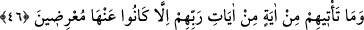

et-Te’vîlâtü’n-Necmiyye’de der ki: “Onlara önünüzde olan” dünyadan ve dünyada
olan şehvetlerden ve lezzetlerinden; “arkanızda olan” âhiretten ve âhirette olan
nimetlerden, hurilerden, saraylardan, ağaçlardan, meyvelerden, ırmaklardan, orada
bulunan canların çektiği ve yine gözlerin lezzet aldığı “şeylerden korkun; umulur ki”
cemâli müşâhede, celâli mükâşefe ve vuslatın kemâlâtıyla “size merhamet olunur.”
denildiğinde (aldırmazlar).”
Bazıları der ki: Önününüzdeki büyük kıyametin hallerinden ve arkanızdaki küçük
kıyametin hallerinden korkun. Çünkü birincisi Hak tarafından, ikincisi ise nefis
tarafından gelir. Birincisinde fenâ fillah ile, ikincisinde ise bedenî hey’etlerden tecerrüd
ile korkun. Bundan kurtuluş ve Allah’ın rahmetine mazhariyet gazap ve öfkeden
tamamen kurtulmakla mümkündür. Çünkü nefiste kalıntı olduğu sürece kul gazabdan,
hicabdan/perdeden, belâ/imtihan ve azabın şiddetlendirilmesinden kurtulamaz.
46. Onlara Rablerinin âyetlerinden bir âyet gelmeyedursun, ille de ondan yüz
çevirmişlerdir.
“Onlara” yukarıda açıklanan Allah’ın benzersiz olarak yarattığı şeyleri, sayısız
nimetleri dile getiren bu âyetlerin de içinde dâhil olduğu, kendilerine yönelmeyi ve
îman etmeyi gerektiren “Rablerinin âyetlerinden” tenzîlî Kur’ânî “bir âyet
gelmeyedursun,” inmeyedursun “ille de” yalanlayarak ve alay ederek “ondan yüz
çevirmişlerdir.”
Buradaki “âyetler” ile tenzîlî ve tekvînî âyetlerin genelinin murâd edilmiş olması da
mümkündür. Âyetlerin gelmesinden maksad ise vahyin inmesi ve bu işlerin onlara zâhir
olmasının genelidir. Mânâ ise şöyledir: Kendilerine Allah’ın birliğine ve bir tek ilâh
olduğuna şâhid olan âyet ve mûcizeler gelince mutlaka kendilerini Allah’a îman etmeye
götürecek olan bu âyetleri doğru bir şekilde düşünmezler. Halbuki âlemde olan her şey
Allah Teâlâ’nın sıfatlarından bir sıfatın sûreti ve Allah Teâlâ’nın zâtının sırlarından bir
sırdır.
Ey Mağribî, âlem olarak isimlendirilen,
Aynada senin yüzünün aksidir
Âdem’in bildiği şey ise,
Âlemin nüshası, zâtın mazharıdır.
Molla Câmî der ki:
Cihan, dostumuzun güzelliğinin aynasıdır.
Onun yüzünü bütün zerrelerde müşâhede et.